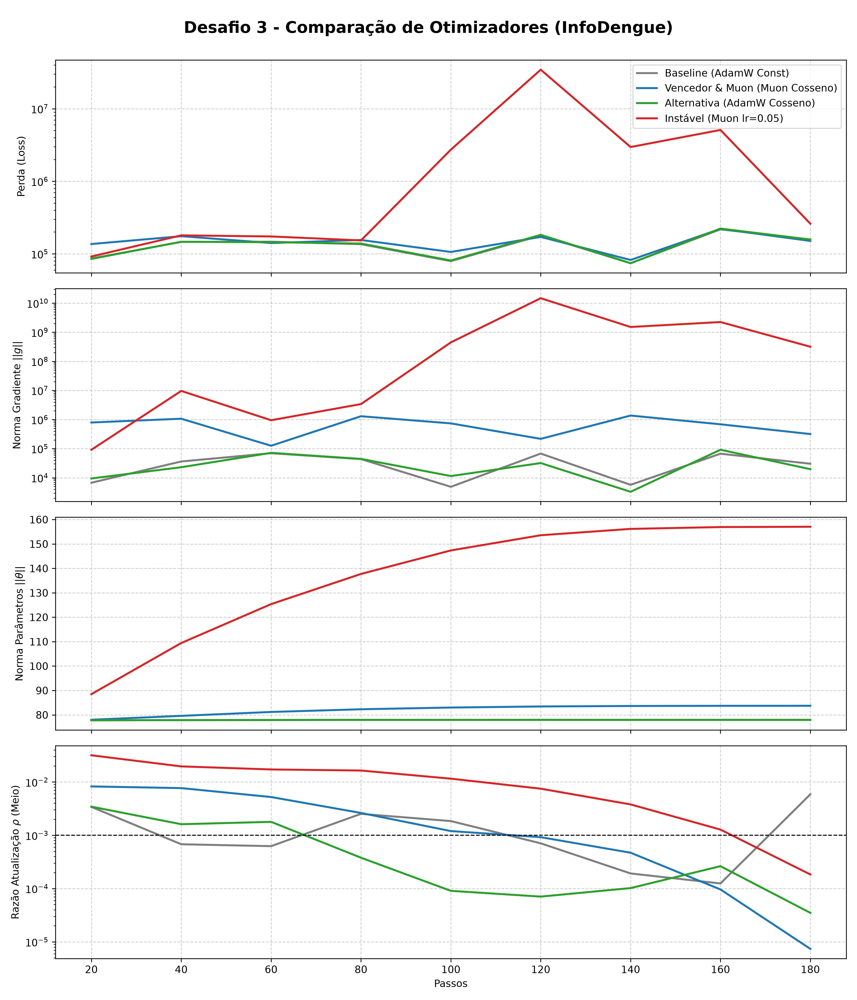

Dinâmica Interna de Otimizadores e Agendas de Aprendizado Observados por Dentro
Previsão temporal de casos a partir de séries climáticas (temperatura e umidade) de 4 polos de MG (Uberlândia, Uberaba, Patos de Minas e Ituiutaba).
• Arquitetura MLP: Rede profunda de 48 camadas com ativação ReLU nas ocultas e inicialização calibrada (Desafio 2), mapeando para uma projeção de saída escalar contínua.
• Função de Perda: MSE (Erro Quadrático Médio). Mede o desvio quadrático entre os casos reais de dengue e as estimativas, penalizando erros grandes de forma rigorosa.
• Por que o Muon? Aplica ortogonalização de Newton-Schulz nas matrizes 2D ocultas (UVT), equalizando o aprendizado em todas as direções sem precisar de BatchNorm.
• Separação Híbrida: Como o Muon exige matrizes 2D, os vieses (vetores 1D) e a camada de saída são otimizados em paralelo pelo AdamW.
• Resultados (1.47 vs 1.53): A agenda cosseno decai suavemente até zero, permitindo assentar os pesos. A Baseline estacionou em ~1.53 × 105, enquanto a vencedora atingiu a menor perda de 1.47 × 105.
Com passo 0.05, os sinais expõem o colapso: picos em ||g|| ≥ 1010 geram explosão na perda (107), ||θ|| deforma até 158 e ρ permanece elevada, impedindo a convergência.
